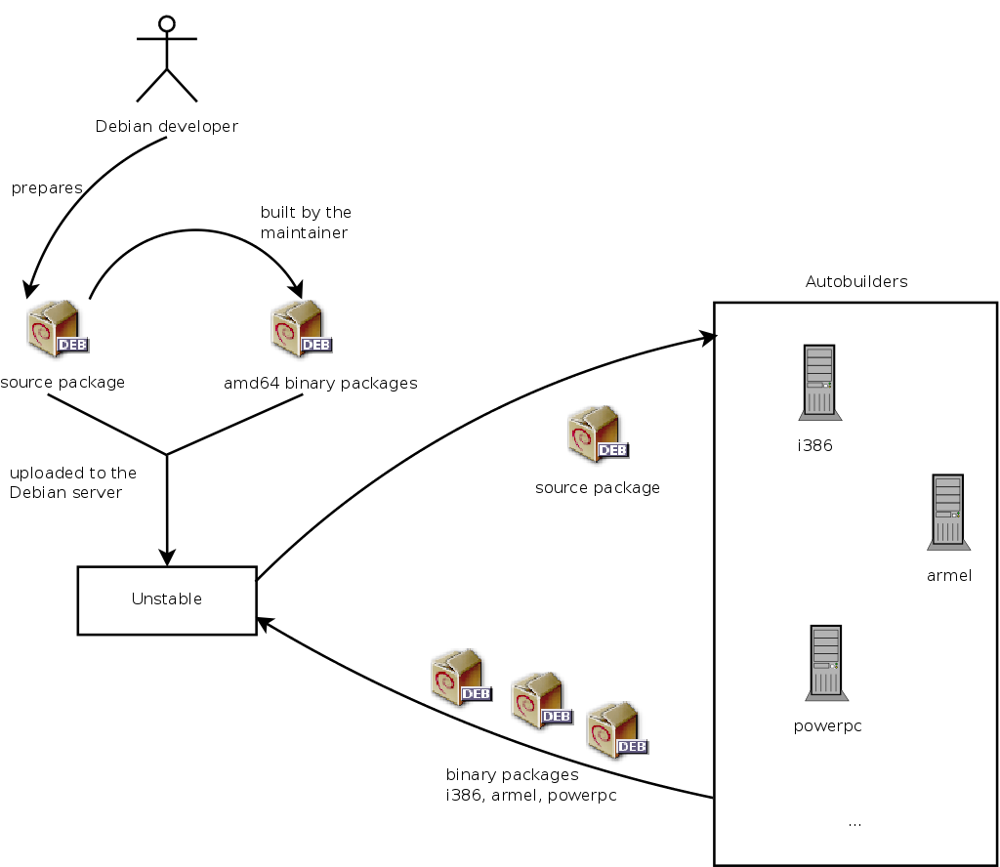
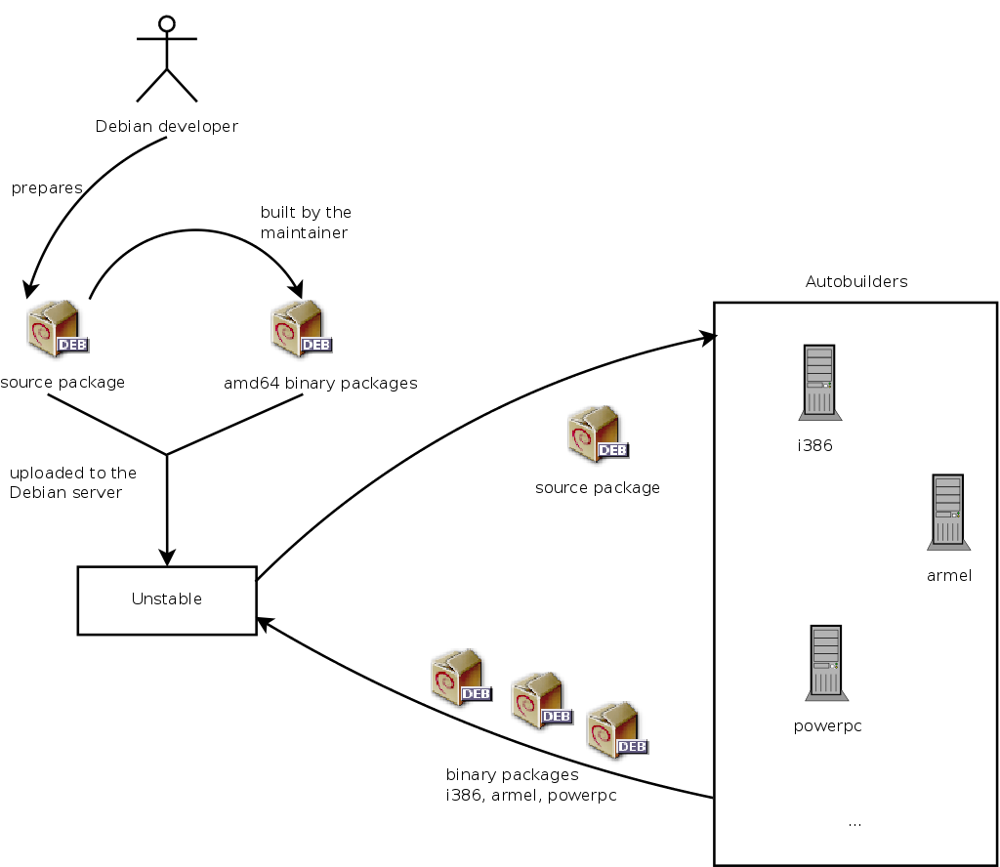

Debian Releases
Debian 一直维护着至少三个发行版: 稳定版(stable)，测试版(testing) 和 不稳定版(unstable)。
稳定版(stable)
稳定版包含了 Debian 官方最近一次发行的软件包。 作为 Debian 的正式发行版本，它是我们优先推荐给用户您选用的版本。
测试版(testing)
测试版包含了那些暂时未被收录进入稳定版的软件包，但它们已经进入了候选队列。使用这个版本的最大益处在于它拥有更多版本较新的软件。 测试版版本代号永远是 testing。(当 testing 发行版足够成熟了,它会冻结发行版,表示这个版本不再加入新代码,只进行除错工作。同时,dists 目录中会建立新的 testing 发行版目录树,并命名新的版本代号。)
不稳定版(unstable)
不稳定版存放了 Debian 现行的开发工作。通常，只有开发者和那些喜欢过惊险刺激生活的人选用该版本。 不稳定版的版本代号永远都被称为 sid。
Debian Lifecycle
Debian将同时具有三至六个不同的版本，实验(Experimental)，不稳定(Unstable)，测试(Testing)，稳定(Stable)，上个稳定版(oldStable)，甚至上上个稳定版(oldoldStable)。每一个对应于发展的不同阶段。如果想有很好的理解，我们来看看一个程序的旅程，从最初的包装到Debian的稳定版本。
 在Unstable中的状态也是非常有趣的，维护者创建初始源码包，他们上传自己维护构建的包到Debian的服务器。该软件可以使用但不是稳定版本，这时候大家发现该程序，然后进行测试。
如果他们遇到的bug，他们报告给包的维护者。维护者然后定期编写修正版本，然后将它们上传到服务器。

Debian在漫长的时间长河中总结出一套完整的体系来保持自己的包的稳定性。毕竟经得起时间考验的才是最好的！
在Unstable中的状态也是非常有趣的，维护者创建初始源码包，他们上传自己维护构建的包到Debian的服务器。该软件可以使用但不是稳定版本，这时候大家发现该程序，然后进行测试。
如果他们遇到的bug，他们报告给包的维护者。维护者然后定期编写修正版本，然后将它们上传到服务器。

Debian在漫长的时间长河中总结出一套完整的体系来保持自己的包的稳定性。毕竟经得起时间考验的才是最好的！

Debian每一个稳定的版本有大约5年的预期寿命，因为释放一个稳定版往往需要2年，当一个新的稳定版本出现，前者的释放版本变成oldstable甚至成为前Oldoldstable。